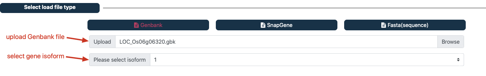
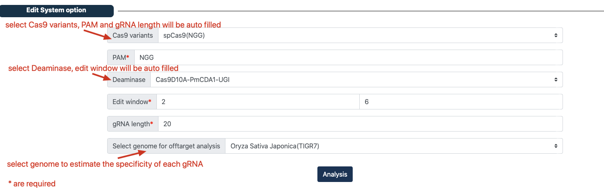

Tutorial to design gRNA for CRISPR base editing knockout system.¶
Step1: Prepare input file¶
CRISPR-BETS allows Genbank, Snapgene, Fasta file formats as input.
- Genbank
The GenBank format for most genes can be downloaded from NCBI(https://www.ncbi.nlm.nih.gov/).
Download
Genbank example file.
- Snapgene
For Snapgene file(.dna), CRISRP-BETS uses a continuous CDS feature to determine the coding sequence of the gene, and different continuous CDS features serve as different isoforms. Snapgene file(.dna) could be generated by SnapGene software (from Insightful Science; available at https://www.snapgene.com/).
Download
Snapgene example file.
- Fasta
The CRISPR-BETS will use exonerate(https://www.ebi.ac.uk/about/vertebrate-genomics/software/exonerate) align CDS sequence to DNA sequence to found Splicing site.
Download
DNA Fasta example file. DownloadCDS Fasta example file
Step2: Select and upload input file¶
Navigate to the ‘Select load file type’ panel(fig1). GenBank is the default input file, and the user can select the type of file to upload.
Upload the proper files.
Select gene isoform (support for Genbank and Snapgene file).

Step3: Select edit system option¶
Navigate to the ‘Edit system option’ panel(fig2).
(optional) Select ‘Cas9 variants’, ‘PAM’ and ‘gRNA length’ will be automatically filled.
(optional) Select ‘Deaminase’, ‘Edit window’ will be automatically filled.
The user fill ‘PAM’, ‘gRNA length’ and ‘Edit window’.
(optional) The user select genome to estimate the specificity of each gRNA.
Click the ‘Analysis’ button and wait for the analysis to complete.

Step4: Scanning result panel and download result information¶
Navigate to the ‘result panel’, the user can drag and zoom to check the detailed information of each gRNA (fig3).
Click ‘save result as txt’ button to download result.